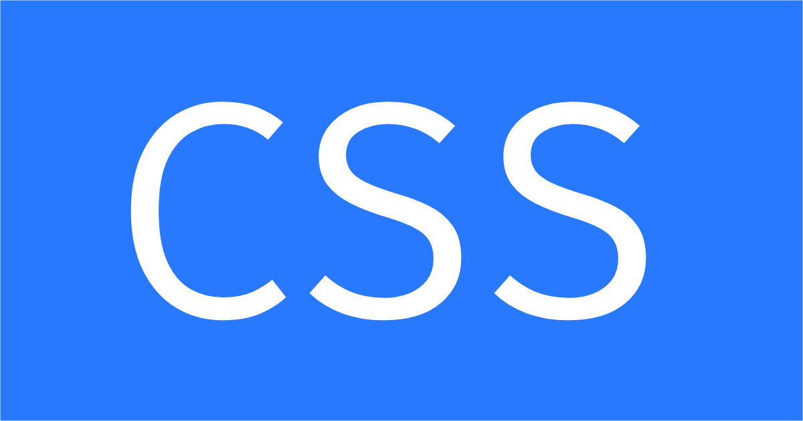

<!DOCTYPE html><html><head><meta charset="utf-8"><title>重新認識 CSS - Media query | Titangene Blog</title><meta http-equiv="X-UA-Compatible" content="IE=edge"><meta name="viewport" content="width=device-width,initial-scale=1,maximum-scale=1"><meta name="HandheldFriendly" content="True"><meta name="apple-mobile-web-app-capable" content="yes"><meta name="author" content="Titangene"><link rel="shortcut icon" href="/favicon.ico"><link rel="alternate" href="/atom.xml" title="Titangene Blog"><meta name="description" content="今天來介紹 CSS 的 media query 和 media feature。"><meta property="og:type" content="article"><meta property="og:title" content="重新認識 CSS - Media query"><meta property="og:url" content="https://titangene.github.io/article/css-media-query.html"><meta property="og:site_name" content="Titangene Blog"><meta property="og:description" content="今天來介紹 CSS 的 media query 和 media feature。"><meta property="og:locale" content="zh_TW"><meta property="og:image" content="https://titangene.github.io/images/cover/css.png"><meta property="article:published_time" content="2019-09-27T11:30:15.000Z"><meta property="article:modified_time" content="2020-02-09T14:20:29.775Z"><meta property="article:author" content="Titangene"><meta property="article:tag" content="IT 鐵人賽"><meta name="twitter:card" content="summary_large_image"><meta name="twitter:image" content="https://titangene.github.io/images/cover/css.png"><meta name="twitter:creator" content="@titangeneTW"><meta name="twitter:site" content="@titangene_blog"><meta property="fb:admins" content="100001106016019"><meta property="fb:app_id" content="2470546159839111"><meta property="og:image:width" content="1200"><meta property="og:image:height" content="630"><meta name="google-site-verification" content="AaJ39L7h-nWwJjXJMhAMtXSF6H6BUgGWXC80kYvLic8"><link rel="stylesheet" href="//fonts.googleapis.com/css?family=Inconsolata|Titillium+Web"><link href="https://fonts.googleapis.com/css?family=Source+Code+Pro&display=swap" rel="stylesheet"><link rel="stylesheet" href="//use.fontawesome.com/releases/v5.7.0/css/all.css" integrity="sha384-lZN37f5QGtY3VHgisS14W3ExzMWZxybE1SJSEsQp9S+oqd12jhcu+A56Ebc1zFSJ" crossorigin="anonymous"><link rel="stylesheet" href="/style.css"><script async src="https://www.googletagmanager.com/gtag/js?id=UA-129758206-1"></script><script>!function(a){function n(){dataLayer.push(arguments)}a.dataLayer=a.dataLayer||[],n("js",new Date),n("config","UA-129758206-1")}(window)</script><script>function setLoadingBarProgress(e){document.getElementById("loading-bar").style.width=e+"%"}</script><meta name="generator" content="Hexo 4.2.0"><link rel="alternate" href="/atom.xml" title="Titangene Blog" type="application/atom+xml"></head></html><body><div id="loading-bar-wrapper"><div id="loading-bar"></div></div><script>setLoadingBarProgress(20)</script><header class="l_header"><div class="wrapper"><div class="nav-main container container--flex"><a class="logo flat-box" href="/">Titangene Blog</a><div class="menu"><ul class="h-list"><li><a class="flat-box nav-home" href="/">Home</a></li><li><a class="flat-box nav-archives" href="/archives">Archives</a></li></ul><div class="underline"></div></div><div class="m_search"><form name="searchform" class="form u-search-form"><input type="text" class="input u-search-input" placeholder="Search"> <i class="fas fa-search"></i></form></div><ul class="switcher h-list"><li class="s-search"><a class="fas fa-search" href="javascript:void(0)"></a></li><li class="s-menu"><a class="fas fa-bars" href="javascript:void(0)"></a></li></ul></div><div class="nav-sub container container--flex"><a class="logo flat-box" href="/">Titangene Blog</a><ul class="switcher h-list"><li class="s-comment"><a class="far fa-comment-alt" href="javascript:void(0)"></a></li><li class="s-top"><a class="fas fa-arrow-up" href="javascript:void(0)"></a></li><li class="s-toc"><a class="fas fa-list-ol" href="javascript:void(0)"></a></li></ul></div></div></header><aside class="menu-phone"><nav><a href="/" class="nav-home nav">Home </a><a href="/archives" class="nav-archives nav">Archives</a></nav></aside><script>setLoadingBarProgress(40)</script><div class="l_body"><div class="container clearfix"><div class="l_main"><article id="post-css-media-query" class="post white-box article-type-post" itemscope itemprop="blogPost"><section class="meta"><h2 class="title"><a href="/article/css-media-query.html">重新認識 CSS - Media query</a></h2><span class="post-time"><span class="post-meta-item-icon"><i class="fa fa-calendar"></i> </span><span class="post-meta-item-text">發表於</span> <time title="建立時間：2019-09-27 19:30:15" itemprop="dateCreated datePublished" datetime="2019-09-27T19:30:15+08:00">2019-09-27 </time><span class="post-meta-divider">|</span> <span class="post-meta-item-icon"><i class="fa fa-calendar-check"></i> </span><span class="post-meta-item-text">更新於</span> <time title="修改時間：2020-02-09 22:20:29" itemprop="dateModified" datetime="2020-02-09T22:20:29+08:00">2020-02-09</time></span> <span class="comments-count"><span class="post-meta-divider">|</span> <span class="post-meta-item-icon"><i class="fas fa-comment"></i> </span><a href="https://titangene.github.io/article/css-media-query.html#disqus_thread" class="article-comment-count" data-disqus-identifier="article/css-media-query.html" itemprop="discussionUrl"></a></span><div class="post-category"><span class="post-meta-item-icon"><i class="fa fa-folder"></i> </span><span class="post-meta-item-text">分類於</span> <span itemprop="about" itemscope itemtype="http://schema.org/Thing"><a href="/categories/css/" itemprop="url" rel="index"><span itemprop="name">CSS</span></a></span></div></section><section class="toc-wrapper"><h3>目錄</h3><ol class="toc"><li class="toc-item toc-level-2"><a class="toc-link" href="#前言"><span class="toc-text">前言</span></a></li><li class="toc-item toc-level-2"><a class="toc-link" href="#Media-Queries"><span class="toc-text">Media Queries</span></a><ol class="toc-child"><li class="toc-item toc-level-3"><a class="toc-link" href="#all-關鍵字"><span class="toc-text">all 關鍵字</span></a></li><li class="toc-item toc-level-3"><a class="toc-link" href="#Combining-Media-Queries："><span class="toc-text">Combining Media Queries：</span></a></li><li class="toc-item toc-level-3"><a class="toc-link" href="#and-關鍵字"><span class="toc-text">and 關鍵字</span></a></li></ol></li></ol></section><section class="article typo"><div class="article-entry" itemprop="articleBody"><p></p><p>今天來介紹 CSS 的 media query 和 media feature。</p><a id="more"></a><h2 id="前言"><a class="header-anchor" href="#前言"></a>前言</h2><blockquote><p>「重新認識 CSS」這個系列名稱的由來就如其名，我想要重新認識它。雖然以前就有學過 CSS，但這次想從 CSS Spec 中學到最原始的定義和內容，更加了解 CSS 的原理，讓我在切版的時候可以更加確定自己在做什麼，我踩到的雷只是因為我不夠了解它才會炸開。</p><p>本文同步發表於 iT 邦幫忙：<a href="https://ithelp.ithome.com.tw/articles/10221641" target="_blank" rel="noopener">重新認識 CSS - Media query</a></p><p>在這 30 天的內容中，會將 Spec 內看到的資料整理成這個系列，也希望正在學 CSS 的各位可以更加了解它。另外我也會同時將文章發至我的 Blog，如果想直接看文內的程式碼 Demo 畫面，可以到我的 Blog 來看 😃。</p><p>「重新認識 CSS」系列文章發文於：</p><ul><li><a href="https://ithelp.ithome.com.tw/users/20117586/ironman/2617" target="_blank" rel="noopener">iT 邦幫忙</a></li><li><a href="https://titangene.github.io/tags/it-%E9%90%B5%E4%BA%BA%E8%B3%BD/">Titangene Blog</a></li></ul></blockquote><p>使用 media query 可以針對指定裝置來指定要應用哪個 style sheet</p><p>複習一下<a href="https://ithelp.ithome.com.tw/articles/10221152" target="_blank" rel="noopener">昨天</a>提到的 media type，如果要在不同 media type 指定不同的 style sheet，可以在 HTML 的 <code>link</code> 元素上的 <code>media</code> 屬性，為外部 style sheet 指定目標 media。</p><p>例如：</p><ul><li>在螢幕上顯示時使用無襯線字體</li><li>在列印時使用襯線字體</li></ul><figure class="highlight html"><table><tr><td class="gutter"><pre><span class="line">1</span><br><span class="line">2</span><br></pre></td><td class="code"><pre><code class="hljs html"><span class="hljs-tag">&lt;<span class="hljs-name">link</span> <span class="hljs-attr">rel</span>=<span class="hljs-string">"stylesheet"</span> <span class="hljs-attr">type</span>=<span class="hljs-string">"text/css"</span> <span class="hljs-attr">media</span>=<span class="hljs-string">"screen"</span> <span class="hljs-attr">href</span>=<span class="hljs-string">"sans-serif.css"</span>&gt;</span><br><span class="hljs-tag">&lt;<span class="hljs-name">link</span> <span class="hljs-attr">rel</span>=<span class="hljs-string">"stylesheet"</span> <span class="hljs-attr">type</span>=<span class="hljs-string">"text/css"</span> <span class="hljs-attr">media</span>=<span class="hljs-string">"print"</span> <span class="hljs-attr">href</span>=<span class="hljs-string">"serif.css"</span>&gt;</span><br></code></pre></td></tr></table></figure><blockquote><p>其他為 style sheet 指定 media 的方法可參閱在此系列中的另一篇「<a href="https://ithelp.ithome.com.tw/articles/10221152" target="_blank" rel="noopener">重新認識 CSS - media type</a>」。</p></blockquote><h2 id="Media-Queries"><a class="header-anchor" href="#Media-Queries"></a>Media Queries</h2><p>media query 是由 media type 和零個或多個表達式組成，這些表達式會檢查指定的 media feature 條件。</p><p>media query 是一個邏輯表達式，可以為 true 或 false。如果 media query 的 media type 與執行 UA 的裝置的 media type match (例如：“<a href="https://www.w3.org/TR/CSS22/about.html#applies-to" target="_blank" rel="noopener">Applies to</a>” 那行所定義的)，並且 media query 中的所有表達式均為 true，則 media query 為 true。</p><h3 id="all-關鍵字"><a class="header-anchor" href="#all-關鍵字"></a><code>all</code> 關鍵字</h3><p>如果要適用所有 media type 的 media query，可以使用簡寫語法省略掉 <code>all</code> 這個關鍵字 (後面接著 <code>and</code> )。也就是說，如果沒有明確指定 media type 時，就等同於 <code>all</code> 這個關鍵字。例如：</p><p>下面兩個 media query 相同：</p><figure class="highlight css"><table><tr><td class="gutter"><pre><span class="line">1</span><br><span class="line">2</span><br></pre></td><td class="code"><pre><code class="hljs css"><span class="hljs-keyword">@media</span> all <span class="hljs-keyword">and</span> (<span class="hljs-attribute">min-width:</span><span class="hljs-number">500px</span>) &#123; … &#125;<br><span class="hljs-keyword">@media</span> (<span class="hljs-attribute">min-width:</span><span class="hljs-number">500px</span>) &#123; … &#125;<br></code></pre></td></tr></table></figure><p>下面兩個也相同：</p><figure class="highlight css"><table><tr><td class="gutter"><pre><span class="line">1</span><br><span class="line">2</span><br></pre></td><td class="code"><pre><code class="hljs css"><span class="hljs-keyword">@media</span> (<span class="hljs-attribute">orientation:</span> portrait) &#123; … &#125;<br><span class="hljs-keyword">@media</span> all <span class="hljs-keyword">and</span> (<span class="hljs-attribute">orientation:</span> portrait) &#123; … &#125;<br></code></pre></td></tr></table></figure><h3 id="Combining-Media-Queries："><a class="header-anchor" href="#Combining-Media-Queries："></a>Combining Media Queries：</h3><p>可在 media query 列表中組合多個 media query，並以逗號 <code>,</code> 分隔。</p><p>如果 media query 列表的任何 component media query 為 <code>true</code>，則為 <code>true</code>；若所有 component media query 為 <code>false</code> 才會為 <code>false</code>。</p><p>例如：如果 media type 為 <code>screen</code> 且為彩色裝置，或 media type 為 <code>projection</code> 且為彩色裝置：</p><figure class="highlight css"><table><tr><td class="gutter"><pre><span class="line">1</span><br></pre></td><td class="code"><pre><code class="hljs css"><span class="hljs-keyword">@media</span> screen <span class="hljs-keyword">and</span> (color), projection <span class="hljs-keyword">and</span> (color) &#123; … &#125;<br></code></pre></td></tr></table></figure><h3 id="and-關鍵字"><a class="header-anchor" href="#and-關鍵字"></a><code>and</code> 關鍵字</h3><p>下面是在 HTML 的 <code>link</code> 元素上的 <code>media</code> 屬性使用 <code>and</code> 關鍵字：</p><figure class="highlight html"><table><tr><td class="gutter"><pre><span class="line">1</span><br></pre></td><td class="code"><pre><code class="hljs html"><span class="hljs-tag">&lt;<span class="hljs-name">link</span> <span class="hljs-attr">rel</span>=<span class="hljs-string">"stylesheet"</span> <span class="hljs-attr">media</span>=<span class="hljs-string">"screen and (color)"</span> <span class="hljs-attr">href</span>=<span class="hljs-string">"test.css"</span> /&gt;</span><br></code></pre></td></tr></table></figure><p>跟上面一樣的 media query，只是下面是在 CSS 中使用 @import-rule 寫的：</p><figure class="highlight css"><table><tr><td class="gutter"><pre><span class="line">1</span><br></pre></td><td class="code"><pre><code class="hljs css"><span class="hljs-keyword">@import</span> url(color.css) screen <span class="hljs-keyword">and</span> (color);<br></code></pre></td></tr></table></figure><p>資料來源：</p><ul><li><a href="https://www.w3.org/TR/CSS22/media.html" target="_blank" rel="noopener">CSS 2.2 - 7. Media types</a></li><li><a href="https://www.w3.org/TR/css3-mediaqueries/" target="_blank" rel="noopener">Media Queries</a></li><li><a href="https://www.w3.org/TR/mediaqueries/#media-types" target="_blank" rel="noopener">Media Queries Level 4</a></li></ul></div><div class="article-tags tags"><a href="/tags/it-%E9%90%B5%E4%BA%BA%E8%B3%BD/" title="IT 鐵人賽">IT 鐵人賽</a></div></section><div class="article-share-links"><span>分享：</span> <a class="fab fa-facebook-f" title="Facebook" target="_blank" href="javascript:window.open('https://www.facebook.com/sharer.php?u=https%3A%2F%2Ftitangene.github.io%2Farticle%2Fcss-media-query.html', 'Share on Facebook','width=600, height=600')"></a> <a class="fab fa-twitter" title="Twitter" target="_blank" href="javascript:window.open('https://twitter.com/share?url=https%3A%2F%2Ftitangene.github.io%2Farticle%2Fcss-media-query.html&amp;text=重新認識 CSS - Media query&amp;hashtags=IT鐵人賽&amp;via=titangene_blog', 'Share on Twitter','width=600, height=260')"></a> <a class="fab fa-linkedin-in" title="Linkedin" target="_blank" href="javascript:window.open('https://www.linkedin.com/shareArticle?mini=true&amp;url=https%3A%2F%2Ftitangene.github.io%2Farticle%2Fcss-media-query.html&amp;title=重新認識 CSS - Media query', 'Share on Linkedin','width=600, height=600')"></a> <a class="fab fa-facebook-messenger" title="Facebook Messenger" target="_blank" href="javascript:window.open('http://www.facebook.com/dialog/send?app_id=2470546159839111&amp;link=https%3A%2F%2Ftitangene.github.io%2Farticle%2Fcss-media-query.html&amp;display=popup&amp;redirect_uri=https%3A%2F%2Fwww.facebook.com%2Fdialog%2Freturn%2Fclose%23_%3D_', 'Send in Messenger','width=600, height=600')"></a> <a class="fab fa-telegram-plane" href="https://telegram.me/share/url?url=https%3A%2F%2Ftitangene.github.io%2Farticle%2Fcss-media-query.html&text=重新認識 CSS - Media query" target="_blank"></a></div><nav id="article-nav"><a href="/article/css-media-type.html" id="article-nav-prev" class="article-nav-link-wrap" title="重新認識 CSS - media type" rel="prev"><strong class="article-nav-caption">Prev</strong><p class="article-nav-title">重新認識 CSS - media type</p><i class="fas fa-angle-left"></i> </a><a href="/article/css-import.html" id="article-nav-next" class="article-nav-link-wrap" title="重新認識 CSS - @import" rel="next"><strong class="article-nav-caption">Next</strong><p class="article-nav-title">重新認識 CSS - @import</p><i class="fas fa-angle-right"></i></a></nav><section id="list_related_posts"><h2>相關文章</h2><ul class="related-posts"><li class="related-posts-item"><a class="related-posts-link" href="/article/css-import.html">重新認識 CSS - @import</a><div class="related-posts-item-abstract">CSS 的 @import 規則可以從其他 style sheet 中 import 樣式規則，本篇將介紹如何使用。前言「重新認識 CSS」這個系列名稱的由來就如其名，我想要重新認識它。雖然以前就有學過 CSS，但這次想</div></li><li class="related-posts-item"><a class="related-posts-link" href="/article/css-box-sizing.html">重新認識 CSS - box-sizing</a><div class="related-posts-item-abstract">本篇將介紹 box-sizing 屬性是如何設定計算元素的總寬度和總高度。前言「重新認識 CSS」這個系列名稱的由來就如其名，我想要重新認識它。雖然以前就有學過 CSS，但這次想從 CSS Spec 中學到最原始的定義和</div></li><li class="related-posts-item"><a class="related-posts-link" href="/article/css-selector-pseudo-element.html">重新認識 CSS - Pseudo-element (偽元素)</a><div class="related-posts-item-abstract">Selector (選擇器) 可用來選擇 HTML 和 XML 文件中的節點，並將樣式屬性綁定到文件 (HTML 和 XML) 中的元素上。當選擇器與某元素 match 的時候，就可以對選到的元素進行 CSS 樣式設定。</div></li><li class="related-posts-item"><a class="related-posts-link" href="/article/css-box-generation-inline-box.html">重新認識 CSS - Visual formatting model：Box generation (inline box)</a><div class="related-posts-item-abstract">在 visual formatting model 中，document tree 中的每個元素都會根據 box model 生成 0 個或多個 box，box 分為兩種不同的 type：block 和 inline。本</div></li><li class="related-posts-item"><a class="related-posts-link" href="/article/css-overflow.html">重新認識 CSS - overflow</a><div class="related-posts-item-abstract">本篇將介紹 CSS 的 overflow 屬性。前言「重新認識 CSS」這個系列名稱的由來就如其名，我想要重新認識它。雖然以前就有學過 CSS，但這次想從 CSS Spec 中學到最原始的定義和內容，更加了解 CSS 的</div></li><li class="related-posts-item"><a class="related-posts-link" href="/article/css-attribute-value.html">重新認識 CSS - CSS 屬性值</a><div class="related-posts-item-abstract">在介紹各種 CSS 屬性之前，先來介紹屬性值，CSS 的屬性值分為：整數和實數、Lengths (長度)、百分比、URLs 和 URIs、Counters (計數器)、顏色、字串。前言「重新認識 CSS」這個系列名稱的由</div></li></ul></section><section class="comments" id="comments"><h2>討論區</h2><div id="disqus_thread"><noscript>Please enable JavaScript to view the <a href="https://disqus.com/?ref_noscript" target="_blank" rel="noopener">comments powered by Disqus.</a></noscript></div></section></article><script>window.subData={title:"重新認識 CSS - Media query",tools:!0}</script></div><aside class="l_side"><section class="m_widget about"><div class="avatar-section"><style>.avatar-cover{background:url(/images/avatar_cover.jpg) 0 10%/cover no-repeat}</style><div class="avatar-cover"></div></div><div class="header">Titangene</div><div class="content"><div class="desc">利用 blog 紀錄學習歷程</div></div><div class="content"><meta itemprop="url" content="https://titangene.github.io"><div class="social-wrapper"><a itemprop="sameAs" href="https://github.com/titangene" class="social github" target="_blank" rel="external"><span class="fab fa-github-alt"></span> </a><a itemprop="sameAs" href="https://www.facebook.com/titangene.tw" class="social facebook" target="_blank" rel="external"><span class="fab fa-facebook-square"></span> </a><a itemprop="sameAs" href="https://www.instagram.com/titangene/" class="social instagram" target="_blank" rel="external"><span class="fab fa-instagram"></span> </a><a itemprop="sameAs" href="https://www.flickr.com/photos/titangene" class="social flickr" target="_blank" rel="external"><span class="fab fa-flickr"></span> </a><a itemprop="sameAs" href="/atom.xml" class="social rss" target="_blank" rel="external"><span class="fas fa-rss"></span></a></div></div></section><section class="m_widget facebook_page"><div class="fb-page" data-href="https://www.facebook.com/titangene.blog/" data-width="250" data-small-header="false" data-adapt-container-width="false" data-hide-cover="false" data-show-facepile="true"><blockquote cite="https://www.facebook.com/titangene.blog/" class="fb-xfbml-parse-ignore"><p><a href="https://www.facebook.com/titangene.blog/" class="social facebook" target="_blank"><span class="fab fa-facebook-square"></span></a></p><p><a href="https://www.facebook.com/titangene.blog/" target="_blank" rel="noopener">Titangene Blog</a></p><p>Loading...</p></blockquote></div></section><section class="m_widget recent"><div class="header">Recents</div><div class="content"><ul class="entry"><li><a itemprop="url" class="flat-box" href="/article/npm-and-yarn-cheatsheet.html"><time>2020-04-26</time><div class="name">npm / Yarn 套件管理器指令比對 cheatsheet</div></a></li><li><a itemprop="url" class="flat-box" href="/article/nvm.html"><time>2020-04-19</time><div class="name">nvm：安裝、切換不同 Node.js 版本的管理器</div></a></li><li><a itemprop="url" class="flat-box" href="/article/git-detached-head.html"><time>2020-04-12</time><div class="name">淺入 Git：detached HEAD</div></a></li><li><a itemprop="url" class="flat-box" href="/article/git-tag-object.html"><time>2020-04-05</time><div class="name">深入 Git：Git 物件儲存 - tag 物件</div></a></li><li><a itemprop="url" class="flat-box" href="/article/git-head-ref.html"><time>2020-03-29</time><div class="name">深入 Git：HEAD refs</div></a></li></ul></div></section></aside><script>setLoadingBarProgress(60)</script></div></div><footer id="footer" class="clearfix"><div class="social-wrapper"><a href="https://github.com/titangene" class="social github" target="_blank" rel="external"><span class="fab fa-github-alt"></span> </a><a href="https://www.facebook.com/titangene.tw" class="social facebook" target="_blank" rel="external"><span class="fab fa-facebook-square"></span> </a><a href="https://www.instagram.com/titangene/" class="social instagram" target="_blank" rel="external"><span class="fab fa-instagram"></span> </a><a href="https://www.flickr.com/photos/titangene" class="social flickr" target="_blank" rel="external"><span class="fab fa-flickr"></span> </a><a href="/atom.xml" class="social rss" target="_blank" rel="external"><span class="fas fa-rss"></span></a></div><div>© 2018 - 2020 <span itemprop="copyrightHolder">Titangene</span></div><div>Powered by <a href="https://hexo.io/" target="_blank" class="codename" rel="external noopener">Hexo</a> - Theme <a href="https://github.com/stkevintan/hexo-theme-material-flow" target="_blank" class="codename" rel="external noopener">MaterialFlow</a></div><div><a rel="license noopener" href="http://creativecommons.org/licenses/by-nc-sa/4.0/" target="_blank" rel="external noopener"></a></div></footer><script>setLoadingBarProgress(80)</script><script src="//cdnjs.cloudflare.com/ajax/libs/jquery/2.1.4/jquery.min.js"></script><script src="https://cdnjs.cloudflare.com/ajax/libs/clipboard.js/2.0.0/clipboard.min.js"></script><script src="/js/jquery.fitvids.js"></script><script>var SEARCH_SERVICE="hexo",ROOT="/";ROOT.endsWith("/")||(ROOT+="/")</script><script src="/js/search.js"></script><script src="/js/app.js"></script><script src="/js/clipboard-use.js"></script><script>var disqus_shortname="titangene-blog",disqus_config=function(){this.page.url="https://titangene.github.io/article/css-media-query.html",this.page.identifier="article/css-media-query.html",this.page.title="重新認識 CSS - Media query"};!function(){var e=document.createElement("script");e.async=!0,e.src="//"+disqus_shortname+".disqus.com/embed.js",e.setAttribute("data-timestamp",""+new Date),(document.head||document.body).appendChild(e)}()</script><script id="dsq-count-scr" src="https://titangene-blog.disqus.com/count.js" async></script><div id="fb-root"></div><script>window.fbAsyncInit=function(){FB.init({appId:"2470546159839111",autoLogAppEvents:!0,xfbml:!0,version:"v2.11"}),FB.AppEvents.logPageView()},function(e,n,t){var o,s=e.getElementsByTagName(n)[0];e.getElementById(t)||((o=e.createElement(n)).id=t,o.src="//connect.facebook.net/zh_TW/sdk.js",s.parentNode.insertBefore(o,s))}(document,"script","facebook-jssdk")</script><script>setLoadingBarProgress(100)</script></body>